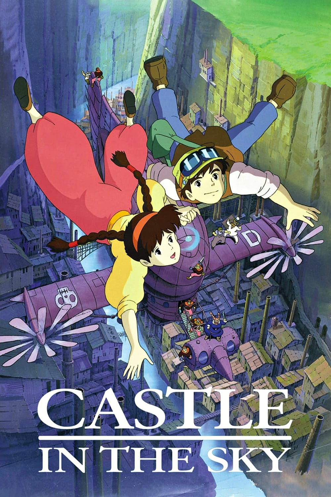
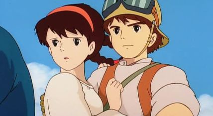
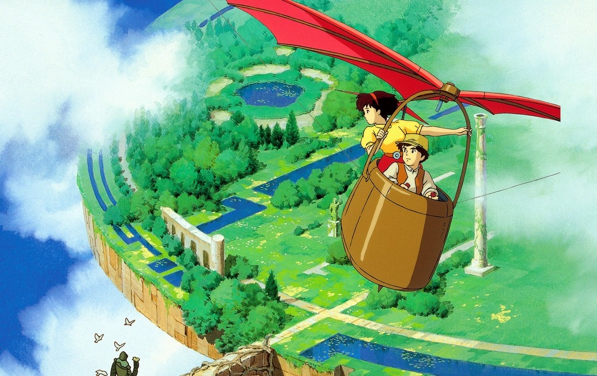
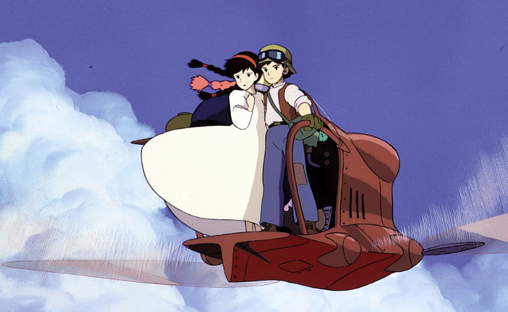

基本信息《天空之城》（日语：天空の城ラピュタ）是日本吉卜力工作室于1986年8月2日所推出的一部蒸气朋克风格的长篇动画电影，原作、导演、剧本和角色设定皆为宫崎骏。此作也是在1985年成立的吉卜力工作室首次公开的剧院作品。 |
 |
剧情简介神秘组织为了寻找女孩希达持有的护身符朝飞艇发起攻击，希达因此从飞行船上摔下，她戴的护身符的神秘力量让她缓缓地降落在一个以矿业为主的小镇。技工学徒巴斯发现希达后将她带回家照顾。巴斯给希达看他已故的父亲所拍摄的照片，照片显示世界上有个名为“拉普达”的天空之城。后来两人在矿井深处遇见波姆爷爷，了解到希达的护身符是“飞行石”制成的，这是能让拉普达以及天空之城能飞在天上的材料。 
虎蛾号跟随着军方的“巨人号”前进，在一连串的风暴后，乌云散去，巴斯认出和他已故的父亲的照片上一样的云彩，那便是“天空之城”拉普达。就在虎蛾号准备降落时，巨人号突然出现并开火，巴斯和希达只得从飞船上降落到已经荒废、杂草丛生的拉普达。他们抵达最上层的温室花园，遇到一个巨型机器人，那个机器人是为了守护拉普达上方的森林的机器人。 图为天空之城拉普达的俯瞰图。  发生在“天空之城”的冒险活动仍在继续。希达和巴斯在与敌人的战斗中失散。罗穆斯卡追赶希达抵达王室宝座，举枪来威胁她交出飞行石；但希达拒绝了，并痛斥罗穆斯卡，她说，离开土地是无法生存下去的。巴斯赶到。罗穆斯卡要求巴斯交出飞行石来换取希达，但是巴斯请他给他们三分钟时间内交谈。希达暗中教会巴斯说出毁灭咒语，然后他们同声念出“巴鲁斯”的毁灭咒语。拉普达开始崩溃，罗穆斯卡从天上摔落大海而身亡，而希达和巴斯最终安然无恙地返回。  故事的最后，逐渐崩毁的天空之城拉普达最终只留下一棵大树，以及树上残留的少许建筑物。深埋在树根里的巨大飞行石，让它缓缓漂浮在空中。
|